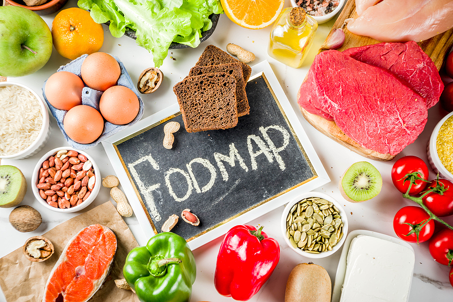

This diet is designed to help people with irritable bowel syndrome (IBS) and/or small intestinal bacterial overgrowth (SIBO) figure out which foods are problematic and which foods reduce symptoms. “The low FODMAP diet is a temporary eating plan that’s very restrictive,” says Johns Hopkins gastroenterologist Hazel Galon Veloso, M.D. “It’s always good to talk to your doctor before starting a new diet, but especially with the low FODMAP diet since it eliminates so many foods — it’s not a diet anyone should follow for long. It’s a short discovery process to determine what foods are troublesome for you.”
The low-FODMAP diet is typically broken down into three main stages: 1. Eliminating high-FODMAP foods from your diet to establish a baseline. 2. Reintroducing high-FODMAP foods one at a time so you can determine which are triggering unpleasant symptoms. 3. Once you identify the foods that cause symptoms, you can avoid or limit them while enjoying everything else worry-free. Customizing your diet by figuring out the specific portion sizes of high-FODMAP foods that are tolerable and integrating them back into your normal diet in those portions.